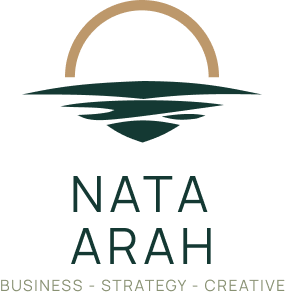

Membaca data dan arah bisnis klinik
Kolaborasi pengalaman klinik & analisis objektif
Discovery, Assessment, Blueprint, dan Eksekusi
Keputusan terarah untuk klinik siap tumbuh
Diagnosis mendalam, blueprint, hingga implementasi
Dukungan praktis marketing, sistem, SOP, dan tim
Halaman ini sedang dalam persiapan.